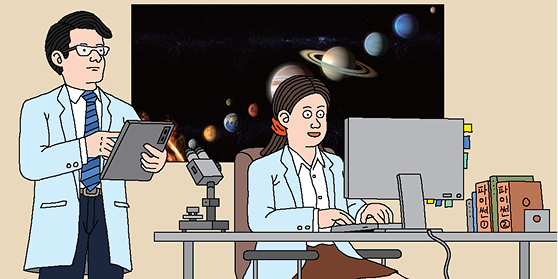

창의∙융합 프로젝트
별 정보를 어떻게 효율적으로 관리할까?
문제 발견하기
‘프로그래머’가 되기 위해서는 다양한 분야의 문제를 해결하는 프로그래밍 능력을 길러야 한다. 다음 글을 읽고 발견한
문제를 정리하여 적어 보자.
문제를 정리하여 적어 보자.
밤하늘의 빛나는 별을 관찰해 보자. 별은 저마다 다른 빛을 내며 반짝인다.
그런데 별들은 왜 색이 서로 다를까? 그렇다. 별의 색이 다른 까닭은 별마다 표면
온도가 다르기 때문이다.
우리가 관찰한 별들과 별들의 색을 기록한다고 생각해 보자. 별의 수가 너무 많아
손으로 기록하기는 힘들 것이다. 별들의 표면 온도 정보를 관리하고, 우리가
궁금해하는 두 별의 표면 온도를 비교해 주는 프로그램이 있다면 별을 관찰하는
연구가 한결 편리해지지 않을까?
그런데 별들은 왜 색이 서로 다를까? 그렇다. 별의 색이 다른 까닭은 별마다 표면
온도가 다르기 때문이다.
우리가 관찰한 별들과 별들의 색을 기록한다고 생각해 보자. 별의 수가 너무 많아
손으로 기록하기는 힘들 것이다. 별들의 표면 온도 정보를 관리하고, 우리가
궁금해하는 두 별의 표면 온도를 비교해 주는 프로그램이 있다면 별을 관찰하는
연구가 한결 편리해지지 않을까?

문제 정의